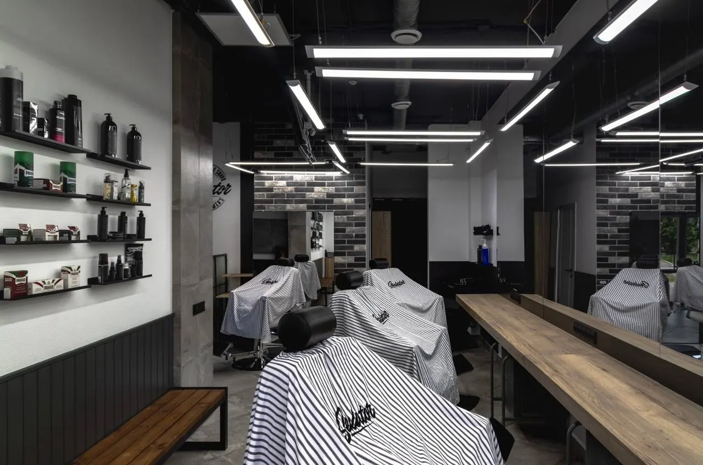
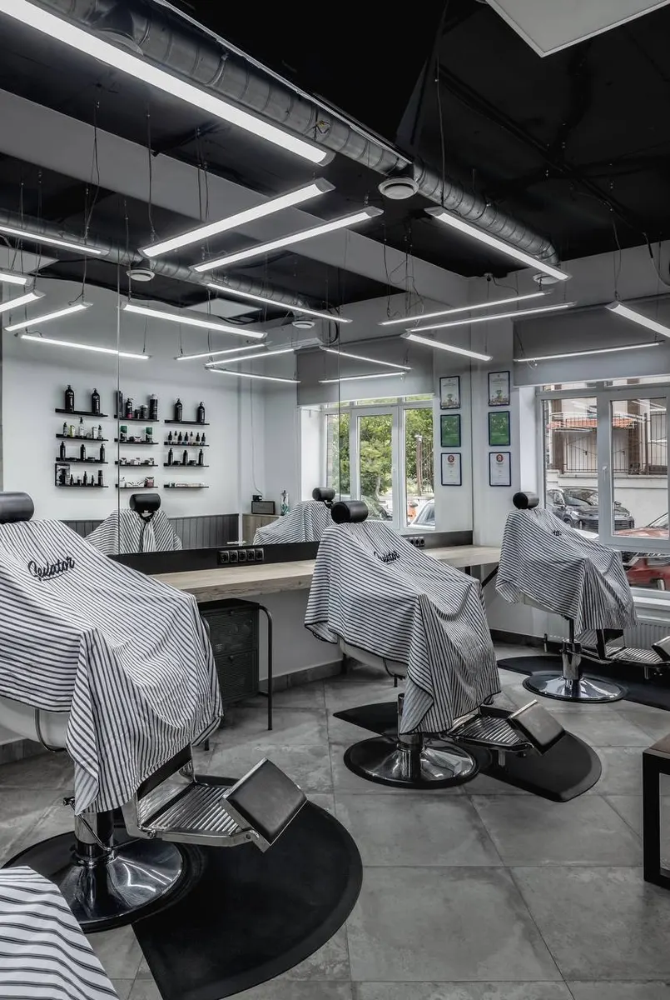
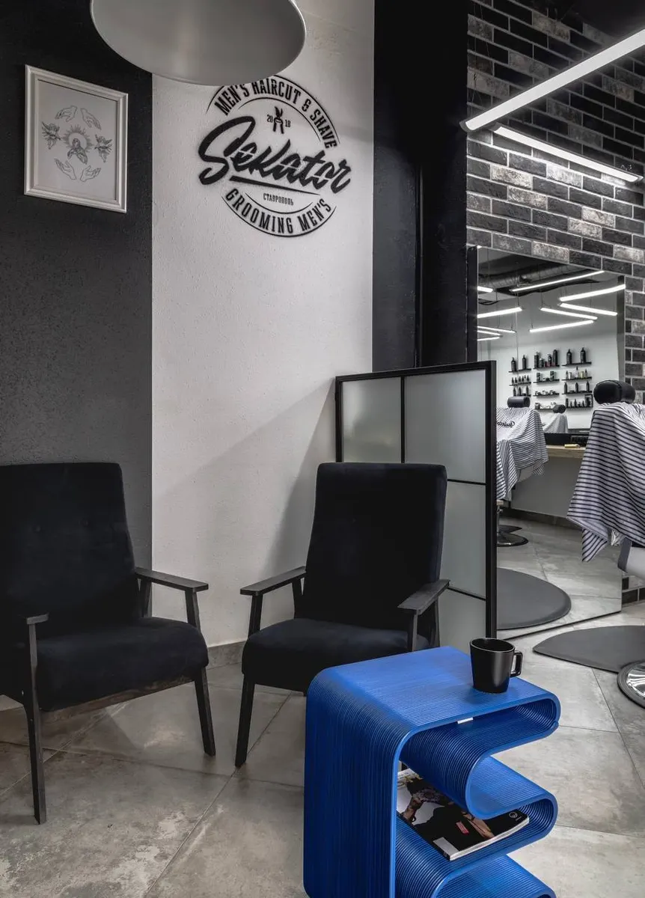
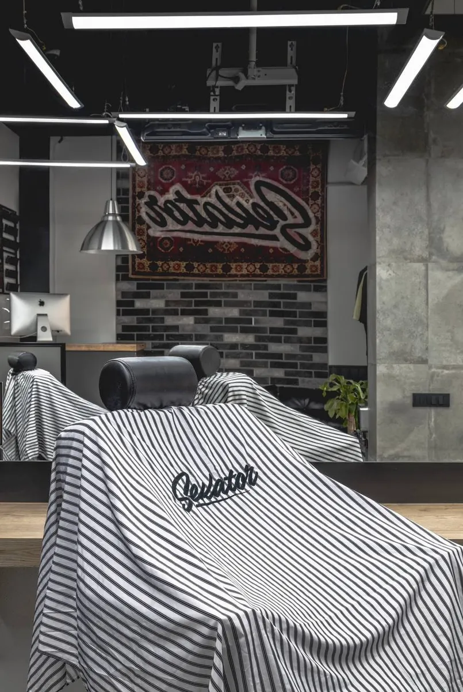

Стрижка · борода · мужской маникюр
Барбершоп Sekator в Ставрополе: мужские стрижки и борода по записи
Выбираете услугу, день и время – запись уходит в WhatsApp. Цены по прайсу, ежедневно с 10:00 до 21:00.

- 5,0 на Яндекс Картах, 252 отзыва
- Ежедневно 10:00–21:00, перерыв 14:00–15:00
- Прайс на сайте – те же цены, что на карточке
Прайс Sekator
Цены с карточки Sekator на Яндекс Картах.
Стрижки
- Мужская стрижка1 200 ₽
- Стрижка машинкой600 ₽
- Детская стрижка до 12 лет1 000 ₽
- Окантовка + укладка600 ₽
Борода и бритьё
- Стрижка + борода1 800 ₽
- Стрижка машинкой + борода1 200 ₽
- Стрижка бороды600 ₽
- Бритьё бороды машинкой300 ₽
- Бритьё лезвием (зона бороды)900 ₽
- Бритьё лезвием (голова)1 000 ₽
Тонирование и мелочи
- Тонирование головы1 000 ₽
- Тонирование бороды800 ₽
- Удаление воском (уши/нос)200 ₽
Мужской маникюр и брови
- Пилочный маникюрАтравматичный, безопасный маникюр1 600 ₽
- Экспресс-маникюр мужскойОбрезаем ногти, придаём форму, шлифовка бафом600 ₽
- Коррекция бровей700 ₽
Цены взяты с карточки Sekator на Яндекс Картах. Актуальность уточняйте при записи.
Как записаться
- 01
Выбираете услугу
Стрижка, борода, маникюр – цена из прайса видна сразу.
- 02
Выбираете день и время
Работаем ежедневно с 10:00 до 21:00, перерыв с 14:00 до 15:00.
- 03
Нажимаете «Записаться»
Откроется WhatsApp с готовым сообщением – останется отправить.



Что вас ждёт
Цена по прайсу
Все цены на сайте – с карточки Sekator на Яндекс Картах.
Запись без звонка
Услуга, день и время уходят одним сообщением в WhatsApp.
Мужской формат
Стрижки, борода, бритьё, мужской маникюр и брови – в одном месте.
Отзывы с Яндекс.Карт
«Уже давненько хожу в этот барбешоп, понравилось с первого раза как пришел, атмосфера приятная, стрегут очень хорошо, всегда ухожу довольным оттуда, всем советую, обязательно приходите!!!»
Олег Малий · 12 апреля
«Стригусь у мастера Константина Голенченко, около двух лет. Обстановка уютная, всегда предложат чай или кофе . Менять на что либо другое не собираюсь. Все устраивает. Было бы десять звезд, поставил бы десять!»
Андрей М. · 28 августа
«Ребенка вожу на стрижку, уже более 3х лет. Сейчас его стрижет мастер Константин Голенченко. Ребёнок доволен и стрижками и общением с мастером) Выходит счастливый и надушенный)))»
Алина Г. · 27 июня
Отзывы с карточки на Яндекс.Картах, без правок.
Контакты
- Адрес
- улица Спартака, 2, микрорайон № 3, Ленинский район, Ставрополь
- Часы
- ежедневно 10:00–21:00, перерыв 14:00–15:00
- Телефон
- +7 (962) 448-67-77